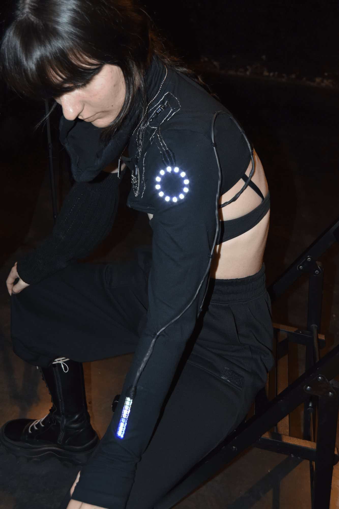
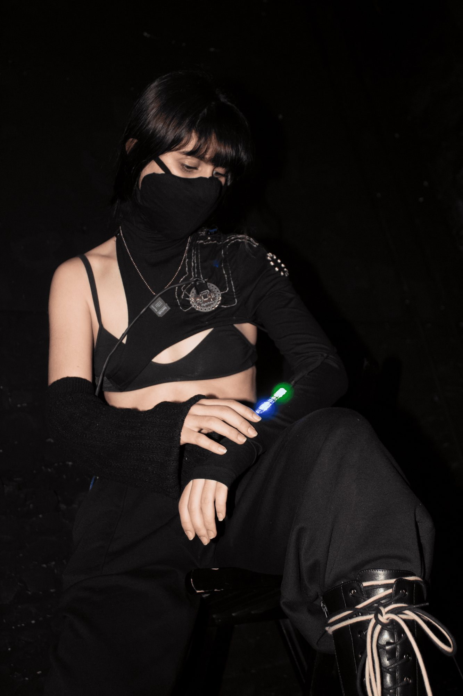
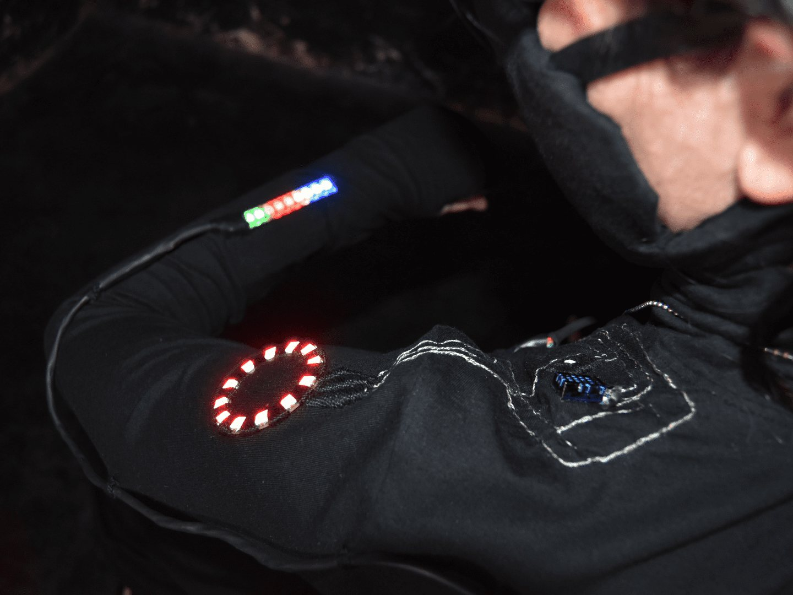

7. Byte Sleeve
Un wearable para el control del entorno y de la identidad


Ambientado en un futuro distópico, en el año 2100, las condiciones ambientales han ido empeorando hasta alcanzar temperaturas abrasadoras y niveles muy altos de radiación UV. Además, se han consolidado el proteccionismo económico y un mayor control de fronteras, recursos y población en general.
Proponemos un wearable pensado para usarse tanto en el exterior como bajo tierra, que facilita moverse con seguridad. El dispositivo avisa, mediante LEDs y vibración, de las variaciones de los valores nocivos que analiza: temperatura, humedad y UV. Si detecta que alguno alcanza niveles peligrosos para la salud, se activa un sistema de alarma. Esta información se guarda y se puede consultar a través de un sensor NFC.


Es un futuro distópico que imaginamos, pero podría ser plausible. Además, hoy en día este prototipo, con algunas modificaciones funcionales, podría usarse en distintos ámbitos relacionados con la salud.

Pincha aquí para ver el repositorio de GitHub del proyecto, con el código que programa la LilyPad de Byte Sleeve.
Proyecto para la asignatura “Experiencias tangibles”
2.º del Grado en Diseño de Interacción de ELISAVA, 2022
Proyecto con Andie Puentes, Samanta Román y Fabiola Choucair.